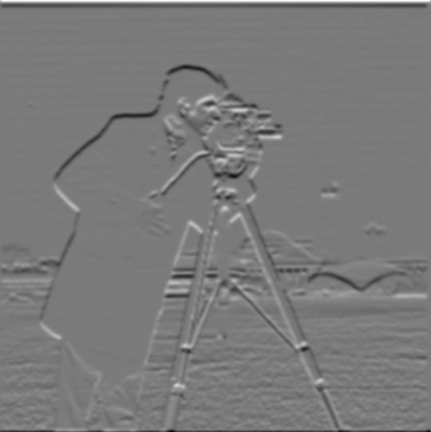
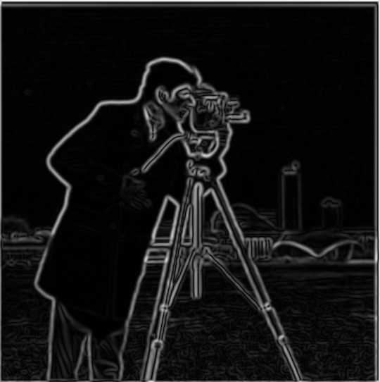
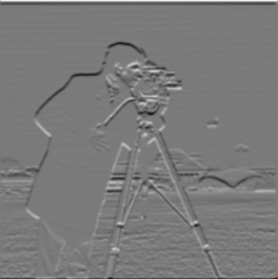
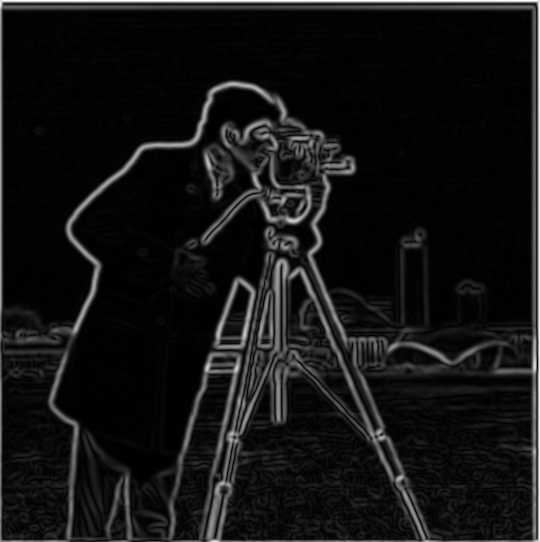
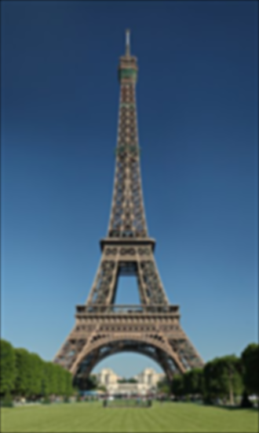
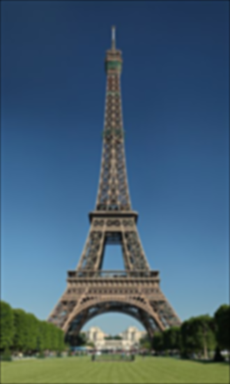
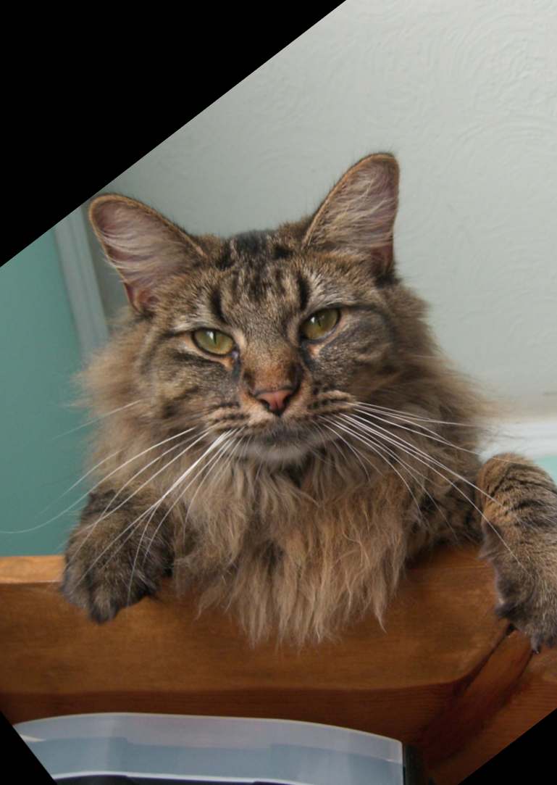
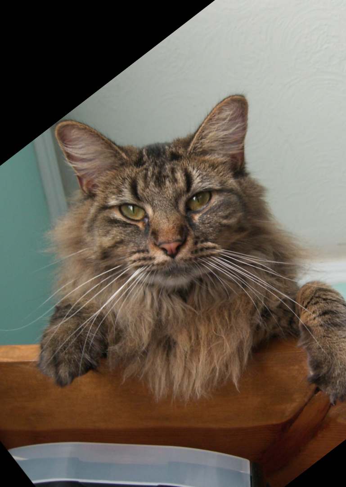

Project Report: Fun with Filters
Task 1.1: Finite Difference Operators
 2-loops Box
2-loops Box
 2-loops dx
2-loops dx
 2-loops dy
2-loops dy
 4-loops Box
4-loops Box
 4-loops dx
4-loops dx
 4-loops dy
4-loops dy
 Built-in Box
Built-in Box
 Built-in dx
Built-in dy
Built-in dx
Built-in dy
Task 1.2: Edge Detection
dx
 dy
dy
 Gradient Magnitude
Gradient Magnitude
 Edge Map
Edge Map
Task 1.3: Edge Detection with Smoothing (DoG)
 Smoothed dx
Smoothed dy
Smoothed dx
Smoothed dy
 Gradient Magnitude (Smoothed)
Edge Map (Smoothed)
Gaussian Filter
Gradient Magnitude (Smoothed)
Edge Map (Smoothed)
Gaussian Filter
DoG on Dog Image
 Dog dx
Dog dy
Dog Gradient Magnitude
Dog dx
Dog dy
Dog Gradient Magnitude
 Dog Edge Map
Dog Edge Map
 Dog x (DoG)
Dog y (DoG)
Dog DoG Edge Map
Dog x (DoG)
Dog y (DoG)
Dog DoG Edge Map
Task 2.1: Image Sharpening
Taj Mahal
Taj blurred
 Taj high freq
Taj sharpened (0.5)
Taj sharpened (1)
Taj sharpened (2)
Taj high freq
Taj sharpened (0.5)
Taj sharpened (1)
Taj sharpened (2)
Statue
Statue blurred (0.5)
 Statue high freq (0.5)
Statue high freq (0.5)
 Statue sharpened (0.5)
Statue sharpened (0.5)
 Statue blurred (1)
Statue blurred (1)
 Statue high freq (1)
Statue high freq (1)
 Statue sharpened (1)
Statue sharpened (1)
 Statue blurred (2)
Statue blurred (2)
 Statue high freq (2)
Statue high freq (2)
 Statue sharpened (2)
Statue sharpened (2)
 Statue blurred (5)
Statue blurred (5)
 Statue high freq (5)
Statue high freq (5)
 Statue sharpened (5)
Statue sharpened (5)
Eiffel Tower
 Eiffel blurred (0.5)
Eiffel blurred (0.5)
 Eiffel high freq (0.5)
Eiffel high freq (0.5)
 Eiffel sharpened (0.5)
Eiffel sharpened (0.5)
 Eiffel blurred (1)
Eiffel high freq (1)
Eiffel sharpened (1)
Eiffel blurred (2)
Eiffel blurred (1)
Eiffel high freq (1)
Eiffel sharpened (1)
Eiffel blurred (2)
 Eiffel high freq (2)
Eiffel high freq (2)
 Eiffel sharpened (2)
Eiffel sharpened (2)
 Eiffel blurred (5)
Eiffel blurred (5)
 Eiffel high freq (5)
Eiffel high freq (5)
 Eiffel sharpened (5)
Eiffel sharpened (5)
Task 2.2: Hybrid Images
Derek & Nutmeg
 Derek im1
Derek im1
 Nutmeg im2
Derek low freq
Nutmeg im2
Derek low freq
 Nutmeg high freq
Nutmeg high freq
 Derek aligned
Nutmeg aligned
Derek aligned
Nutmeg aligned
 Hybrid
Hybrid
 FFT low im1
FFT high im2
FFT low im1
FFT high im2
 FFT hybrid
FFT hybrid
Alligator & Snake
Alligator aligned
Snake aligned
Alligator low freq
Snake high freq
 Hybrid
Hybrid
Tiger & Monkey
Tiger aligned
Monkey aligned
Tiger low freq
Monkey high freq
 Hybrid
Hybrid